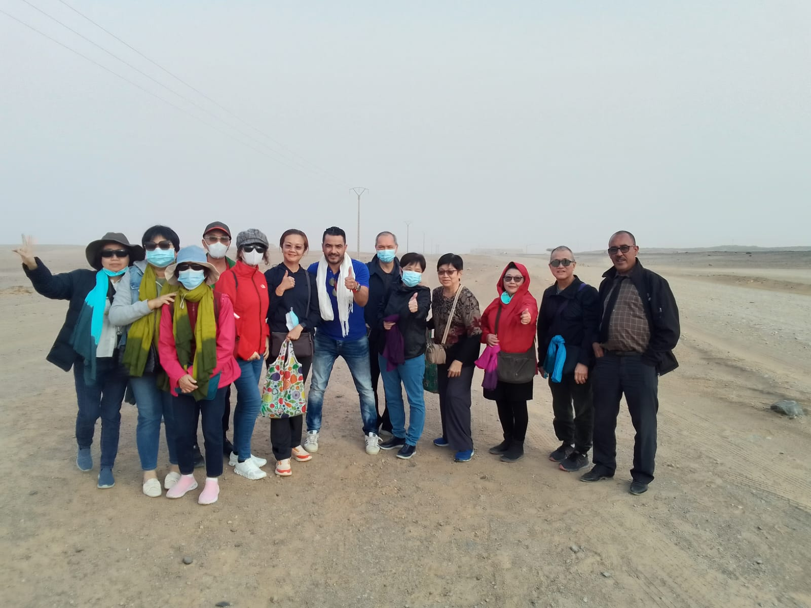

Sahara Desert
Merzouga dunes, camel treks, and nights under stars.
Authentic Morocco Tours
Handpicked journeys through deserts, mountains, imperial cities, and coastal towns — crafted by local experts.
Morocco BouTravel creates authentic journeys across Morocco from its base in Marrakech. The live site presents the agency as a local team focused on personalized travel experiences, from bustling souks and ancient medinas to the Atlas Mountains and the Sahara Desert.
Every trip is shaped around the traveler’s pace, interests, and style, whether the dream is adventure, cultural discovery, relaxation, or a complete private route across Morocco.
Learn About Us
Merzouga dunes, camel treks, and nights under stars.
Souks, palaces, medina life, and day trips.
Old medinas, craft traditions, and imperial history.
Blue streets, mountain air, and quiet northern charm.
Scenic passes, Berber villages, and kasbah routes.
Atlantic coast, sea breeze, and relaxed medina days.
 3-Day Tour
3-Day TourMarrakech
Cross the High Atlas and reach the Erg Chebbi dunes for a classic Sahara experience.
 8-Day Tour
8-Day TourCasablanca
Discover Casablanca, Rabat, Fes, Meknes, and Marrakech through Morocco’s royal history.
 Full Day Trip
Full Day TripMarrakech
Spend the day at Morocco’s famous waterfalls with scenic viewpoints and local discovery.
 7-Day Tour
7-Day TourMarrakech
Discover Morocco’s cities, Atlas Mountains, kasbahs, and Sahara desert in one route.
Deep roots in Moroccan heritage and practical knowledge of the routes.
Private journeys shaped around your dates, interests, and travel style.
Reliable private travel between cities, mountains, coast, and desert.
Medinas, kasbahs, desert camps, tea moments, and cultural discovery.
Go beyond a template itinerary and move through Morocco with the rhythm of local knowledge.
“The Morocco BouTravel team shaped the route around our pace and made the desert days feel effortless.”
“We loved the medinas, mountain stops, and quiet local moments between the famous sights.”
“Comfortable transport, kind guidance, and a route that felt personal from Marrakech to the Sahara.”
Tell us your dates, dream route, and travel style — we’ll help create the perfect trip.